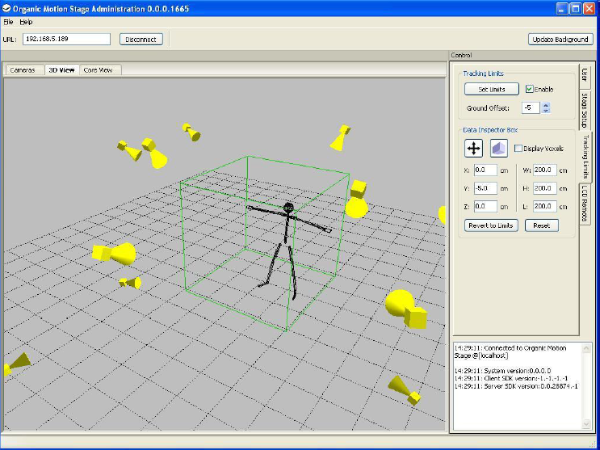
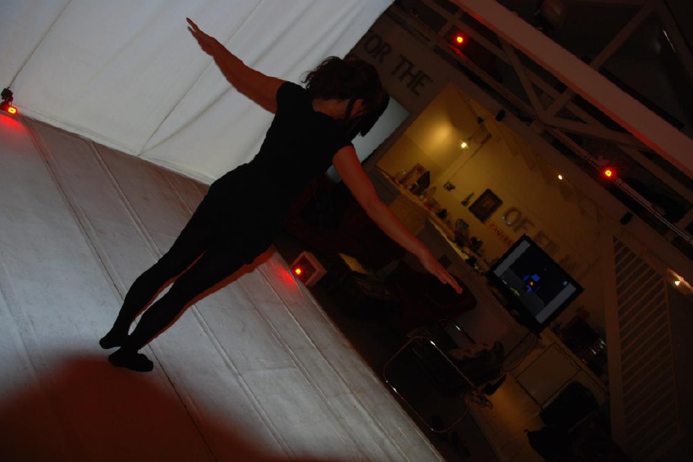

Untethered Human Computer Interaction
Research project with Inition 2010
In 2010, Inition are in the process of developing their LILA system (Live Interactive Lifelike Avatar). The system is based on the Organic Motion Stage (a marker-less motion capture system), and MotionBuilder Software with customised plug-ins using the ORSDK (Open Reality Software Development Kit). The LILA system offers users real-time 3D interactions with virtual worlds and interfaces by simply walking into the area in regular clothes and moving naturally. The system is being used in this research to develop a library of universally intuitive gesture-based interactions to; drive a graphical user interface, control actions in live 3D gaming, interact with avatars and virtual objects that have real-time physics

The research is based on exploring what physical actions have meaningful connotations when the user is confronted with these virtual interfaces, characters, and objects, as defined as interaction techniques. The aim of the project is to evaluate the success of each interaction by assessing how well the user can control the system by using gesture-based interaction techniques, determining how fluid and easy this becomes with each instance.


The research explores a user study which compares the effectiveness of three different types of gesture interaction techniques that can be used to select items on a display menu. The expected result of these studies is that the gestures which are representative of known actions would serve as the most intuitive when applied to a 3D gesture-based interface.
Submitted as part of an MSc(Res) in Media and Arts Technology, Queen Mary University of London